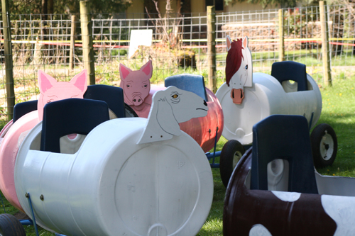
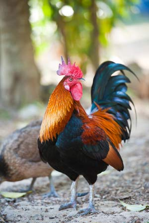

Consider Lattin’s for educational field trips for schools. All tours can use our party greenhouse to have lunch. Kids love running around the maze in our playground! Across from the play area are the bathrooms.
Please call the farm, (360) 491-7328, to make arrangements!
Cider tours start inside our party greenhouse and include:
Ride a tractor-pulled wagon to our pumpkin patch where children pick out a small pumpkin! If time permits, they can ride on our animal train.
Pumpkin tours start inside our store and include:
The tour group rides a tractor-pulled wagon to our pumpkin patch where the kids pick out a small pumpkin! If time permits, they can ride on the animal train.
Animal tours start inside our store and include:
Finally, the children ride on the animal train!

Senior tours start inside our store and includes:
The steps on the wagon are steep but leaving the wagon during the tour is optional. We’ll discuss the entire farm while bringing animals to you to see, touch, and feed.

We accommodate both school and tour buses.